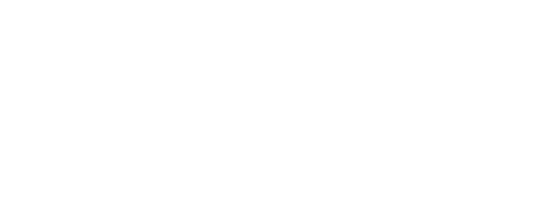

Crazy BOT
Personal automation tool for the YouTube channel @oCrazyoff · Last updated: November 10, 2026

Crazy BOT uses YouTube API Services. See the Privacy Policy.What it does
After each of the owner's live streams on Twitch, Crazy BOT, running on the owner's home server:
- downloads the owner's own stream recording (VOD);
- transcribes its audio and analyzes some frames to understand what happened;
- splits the stream into full gameplay videos and a few Shorts, with titles and thumbnails;
- uploads these videos to the owner's YouTube channel using the YouTube Data API (videos.insert and thumbnails.set);
- posts progress messages and the links of the published videos in the owner's Discord server.
Privacy Policy
Use of YouTube API Services
Crazy BOT uses YouTube API Services. By using it, the owner agrees to the YouTube Terms of Service. Information handled through Google services is also subject to the Google Privacy Policy.
Data accessed
- YouTube: only an OAuth 2.0 authorization from the owner's own Google account, with the
youtube.uploadscope, used to upload videos and thumbnails to the owner's channel. Crazy BOT does not read viewers', subscribers' or any third party's data. - Twitch: only the owner's own public stream recordings and the online/offline status of the owner's channel.
- Stream content: the audio, transcript and frames of the owner's own streams.
How the data is used and shared
- The OAuth token is stored only on the owner's own server and is used exclusively to upload the owner's videos.
- To produce transcripts and choose video segments, parts of the owner's own stream audio, text and frames are sent to AI service providers (Groq and OpenRouter). No data from other people is sent.
- Status messages are sent to the owner's own Discord server.
- No data is sold, rented or used for advertising.
Storage and deletion
- Downloaded stream recordings and working files are deleted from the server as soon as the videos of that stream are published.
- Short "best moments" clips may be kept for up to 45 days to build a highlights compilation, and are then deleted automatically.
- Authorization for YouTube can be revoked at any time at Google security settings. Revoking it stops all uploads.
Cookies and tracking
Crazy BOT has no public website or app for visitors. It does not use cookies, analytics or any tracking.
Contact
Questions about this policy: walyssonribeiro3@gmail.com.
Terms of Use
- Crazy BOT is a personal tool for the owner's own channel and is provided without any warranty.
- It only publishes content created by the owner, in accordance with the YouTube Terms of Service and the YouTube API Services Terms and Developer Policies.
- These terms and this policy may be updated if the tool changes. The date at the top shows the latest version.
Resumo em português
O Crazy BOT é uma ferramenta pessoal, hospedada no próprio servidor do dono, usada só por ele. Ela pega as gravações das lives do próprio dono, divide em vídeos e Shorts e publica apenas no canal dele (@oCrazyoff). Não acessa dados de outras pessoas, não usa cookies nem rastreamento, e apaga os arquivos das lives depois de publicar. A autorização do YouTube pode ser revogada a qualquer momento nas configurações de segurança da conta Google.
© 2026 Walysson Ribeiro Rosa · walysson.com.br